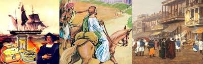
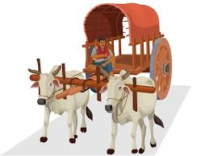
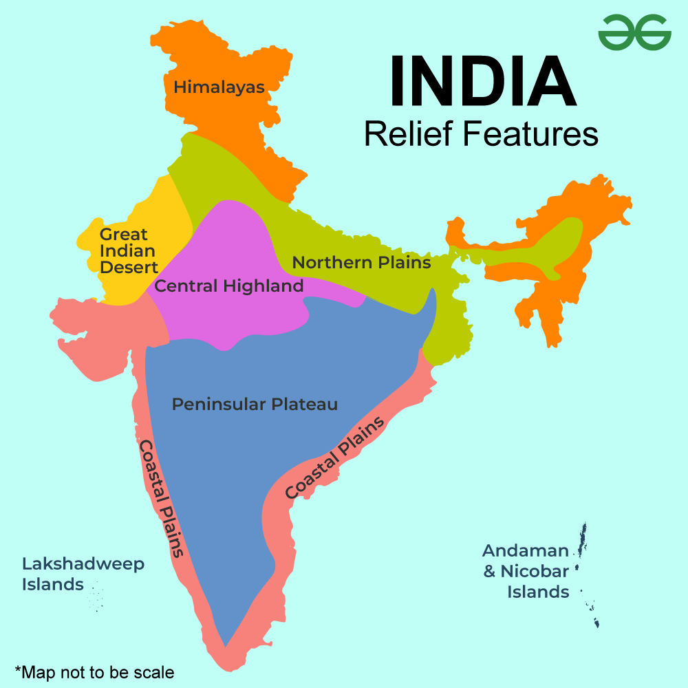

Why people travel to India from various parts of world in ancient time?
In ancient times, people traveled to India for several reasons. Many sought trade opportunities, as India was rich in valuable goods like spices, textiles, and precious stones. Others were drawn by India's advanced culture, including its art, science, and philosophy. Pilgrims from China, Southeast Asia, and the Middle East traveled to India to visit sacred sites, study religious texts, and seek spiritual enlightenment.The British came to India in the 17th century for trade and to establish colonies.
Describe the routes used to travell to india in acient times and its favourable geographical features.
The routes used to travell to India in acient times includes:
TRADE ROUTES
India was a central hub in ancient trade networks, including the Silk Route, the Spice Route, the Salt Route, the Incense Route, the Tin Route, and the Amber Road. These routes connected India to China, the Roman Empire, and other regions.RIVERS
The Brahmaputra and Barak rivers were commonly used for transportation of goods and passengers.BULLOCK CARTS
Bullock carts were used to carry people and goods over long distances.PALANQUINS
Palanquins, also known as palkis, were used to carry women and wealthy landlords. India's geographical features have many advantages, including:
Location
India's central location in the eastern hemisphere gives it a favorable position for trade and commerce. It's located between the Middle East and the Far East, and is connected to Europe and North America by the Suez Canal and the Cape of Good Hope.Coastline
India's 7,517 km coastline provides access to the Indian Ocean, which is a major route for ocean traffic.Mountain ranges
The Himalayan Mountains stretch from the north to the east of India, acting as a natural barrier to foreign invaders. 